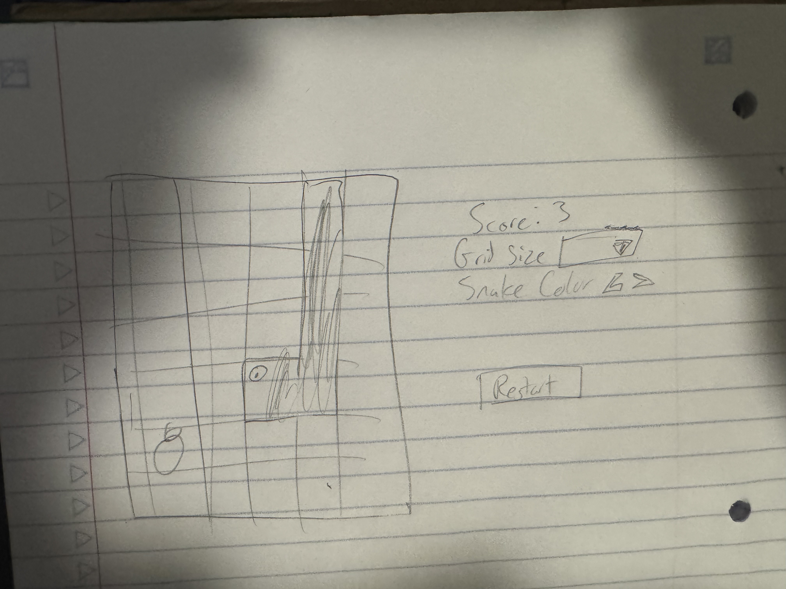

Project Notes
My plan for project 3 is to recreate the popular snake game. It's a game I used to play all the time during class, and that I found myself annoyed at the Google version of. Being able to recreate it and edit it to my liking sounds awesome. I plan to use PixiJS to implement sprites and movement as well as audio. I want to keep the graphics simple, go for an older arcade look.
Mock Up
Development
The first iteration of this game, which you can still find in the inspect element, I used 1 javascript file to handle everything. The code is truly a proof of concept, although I reused most of the methods later in the Snake class. The snake itself is a PIXI container of segments, with segments[0] being the head and the trailing rest the body. After getting my computer to run PixiJS and seeing that snake would work, I went to split it into classes. The snake class, which holds segments, directions, and cell size, handles updating the snake through moving and collision. The food class spawns in food, which are simple circles, and checks its not spawning on top of the snake. The gameState class handles setting and recieving the high score, the speed, and the difficulty. In the main java class it creates the snake and food containers, handles event listening for the start buttons, sets the snake direction based on key input, and handles the main game loop of starting, restarting, and reseting the drawing.
Highlights
The highlight in this project for me was the Audio Context component. As linked in sources, I decided to mess around with using oscillating to create beeps for all the sound effects. So the snake eating food and game over sounds are just results of me, post 4 hours of messing around with code and values, to create sounds. I think it adds more to the retro feel I was trying to go for.